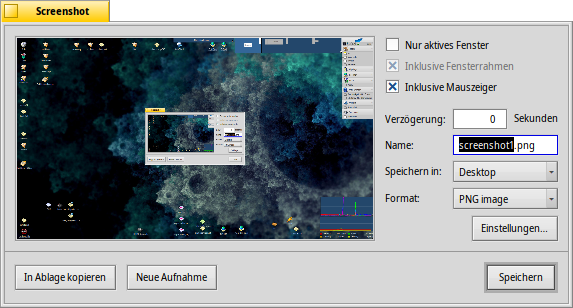

Deutsch
Deutsch Français
Français Italiano
Italiano Русский
Русский Español
Español Svenska
Svenska 日本語
日本語 Українська
Українська 中文 ［中文］
中文 ［中文］ Português
Português Suomi
Suomi Slovenčina
Slovenčina Magyar
Magyar Português (Brazil)
Português (Brazil) English
English Screenshot
Screenshot
| Deskbar: | ||
| Ort: | /boot/System/apps/Screenshot /bin/screenshot | |
| Einstellungen: | ~/Konfiguration/settings/screenshot |
Bildschirmfotos können entweder mittels der DRUCK Taste oder durch Start der Screenshot Anwendung geschossen werden.

Im Screenshot Fenster kann man sich entscheiden, ob man den gesamten Bildschirminhalt oder nur das aktuelle Fenster aufnehmen will und ob dabei auch der Fensterrahmen bzw. der Mauszeiger mitgenommen werden soll. Außerdem lässt sich eine Verzögerung einstellen, nach der ein Screenshot erstellt wird.
Darunter kann Name, Format und Speicherort festgelegt werden, mit dem der Screenshot gespeichert wird wenn auf geklickt wird. Anstatt eine Datei auf die Platte zu bannen, kann man per auch einfach nur die Ablage benutzen und das Bild von dort direkt in eine andere Anwendung einfügen. schießt ein neues Bildschirmfoto.
Die folgenden Tastaturkürzel sind möglich, da alle Einstellungen für den nächsten Screenshot beibehalten werden:
| DRUCK | Schießt ein Bildschirmfoto ohne Verzögerung und öffnet das Screenshot Fenster. | |
| SHIFT DRUCK | Schießt ein Bildschirmfoto "heimlich" (ohne das Screenshot Fenster zu öffnen), aber mit allen beim letzten Mal getroffenen Einstellungen. | |
| STRG DRUCK | Schießt auch ein "heimliches" Bildschirmfoto mit den letzten Einstellungen, speichert es jedoch nicht ab, sondern kopiert es nur in die Ablage. |
 Screenshots aus dem Terminal
Screenshots aus dem Terminal
Eine spezielle screenshot Anwendung ist für den Einsatz im Terminal oder einem Skript gedacht.
screenshot --help zeigt die vertrauten Optionen als Parameter:
~> screenshot --help
screenshot [OPTION] [FILE] Erstellt einen Screenshot vom aktuellen Bildschirminhalt
FILE ist der optionale Ausgabepfad und Dateiname, der im "silent" Modus benutzt wird.
Existiert bereits eine Datei mit diesen Namen, wird sie ohne Warnung überschrieben. Wird
FILE nicht angegeben, wird der Screenshot mit dem Standardnamen im Home Verzeichnis
des Benutzers gespeichert.
OPTION
-m, --mouse Nimmt den Mauszeiger mit auf
-b, --border Nimmt den Fensterrahmen mit auf
-w, --window Aufnahme des aktiven Fensters statt des gesamten Bildschirminhalts
-d, --delay=seconds Aufnahmeverzögerung [in Sekunden]
-s, --silent Macht den Screenshot, ohne das Anwendungsfenster zu öffnen
-f, --format=image Legt das Bildformat fest
[bmp], [gif], [jpg], [png], [ppm], [tga], [tif]
-c, --clipboard Kopiert den Screenshot in die System-Ablage ohne das
Anwendungsfenster zu öffnen
Achtung: OPTION -b, --border funktioniert nur zusammen mit -w, --window